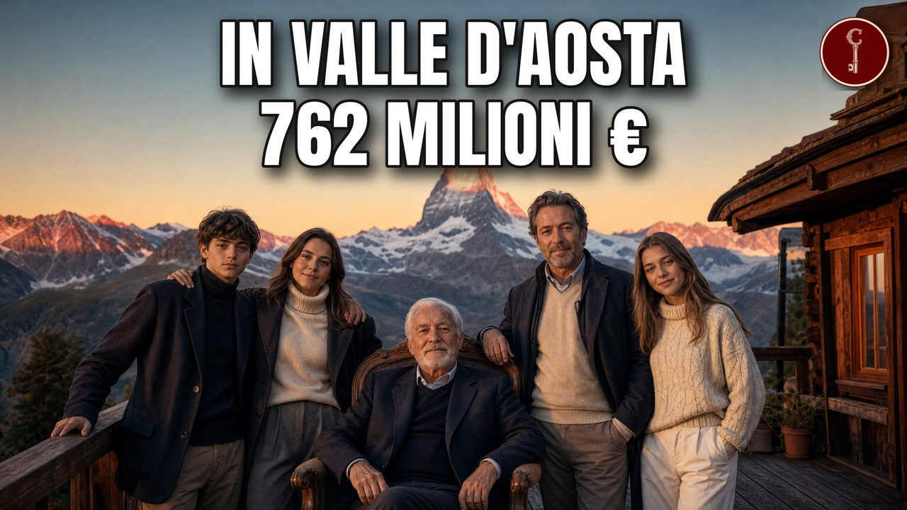

Valle d'Aosta
Le 25 famiglie valdostane più RICCHE (il primo camion garantito da una mucca)

Guarda il video su YouTubeLe 25 famiglie più ricche della Valle d'Aosta, e il mestiere che le ha fatte crescere. Reti paramassi, cantieri di montagna, camion, pullman, supermercati e concessionarie: dietro le aziende che incassano di più in Valle d'Aosta ci sono famiglie. Storie che partono da un caseificio, da un primo camion, da un garage. Le mettiamo in fila per fatturato, dalla venticinquesima alla prima.
Le fonti, capitolo per capitolo
Solo le fonti che sostengono qualcosa detto nel video, capitolo per capitolo, nell'ordine in cui il video le usa.
Apertura
groscidac.eu
La Nostra Storia25 · Giovannoni e Colombo
fatturatoitalia.it
Ecoval Srl | Profilo economico e bilancio aziendale23 · Nex
alpiscavi.com
Costruzioni generalialpiscavi.com
Sistemazione piste e impianto di innevamentoconfindustria.aosta.it
Alpi Scavi S.r.l.22 · Cortese e Peaquin
peaquinsrl.it
L'Azienda - - Peaquinpeaquinsrl.it
Contatti - - Peaquinpeaquinsrl.it
Impianti Fotovoltaici - - peaquinsrl.itreportaziende.it
PEAQUIN S.R.L. - Bilancio, Fatturato, Visure, Rating21 · Minini
mdmchatillon.it
Azienda EN - MDM20 · Frutaz
ao.camcom.it
Chenevier Spa - Camera valdostanachenevier.com
L'azienda – Chenevier – Case in legnoconfindustria.aosta.it
PMI DAY 18 novembre 2022: 13 anni insieme alle piccole e medie ...fatturatoitalia.it
Chenevier Spa | Fatturato, utile e bilancio ufficialegestioneregione.vda.it
determina 314 del 07/08/2020gestioneregione.vda.it
ordinanza 29 del 30/10/2020regione.vda.it
�regione.vda.it
Bollettino ufficiale, ordinanza 38 del 24/12/2020valdostana.bcc.it
Autori - BCC Valdostana - Credito Cooperativo19 · Vuillermoz e Scullari
ao.camcom.it
Tecnomec S.r.l.gruppotecnomec.com
Azienda - Tecnomec: Eccellenza nell'Industria della Lavorazione Metalligruppotecnomec.com
Arnad, la Tecnomec accelera tra investimenti e assunzioni. - Tecnomec18 · Cuc
edildueci.com
Contattiedildueci.com
Materiali edili in Valle d'Aostafatturatoitalia.it
Edildueci Srl | Bilancio completo e documenti societari17 · Adorni
gazzettamatin.com
In Valle d’Aosta la famiglia Adorni porta Italnolo: tutto il noleggio che puoi immaginarepaginebianche.it
Auto Mont Blanc S.r.l. a Saint-christophe (AO)reportaziende.it
AUTO MONT BLANC S.R.L. (AO) | 0058599007016 · Quendoz
articolinewssite.wordpress.com
Fabio Inzani: innovazione e sostenibilità al centro della progettazione di Tecnicaer Engineeringcompanyreports.it
Fatturato Tecnicaer Engineering Srl Aosta (AO) 01030520074tecnicaer.com
History | Tecnicaertecnicaer.com
People | Tecnicaer15 · Treves
fatturatoitalia.it
Quendoz Srl | Bilancio e verifica commerciale14 · Inzani
Wikipedia
Apri l'articolo13 · Stanca
fatturatoitalia.it
Supermarches Des Alpes Srl - Dati aziendali - FatturatoItaliaWikipedia
Apri l'articolo12 · Moretto
aziende.money.it
IVIES SPA - Fatturato, Utili/Perdite, Visure e Bilanci11 · Framarin
vitagroup.it
Storia - Vita Groupvitagroup.it
Vita Group - Aostavitagroup.it
Timetables and lines - Vita Group10 · Calliera
companyreports.it
Fatturato Aziende Valle d'Aosta - CompanyReports.it - Pagina 1contozcombustibili.com
Homepage - Contoz Combustibili srllei.bloomberg.com
CONTOZ SRL PRODOTTI PETROLIFERI - LEI: 81560024CF07546EE1669 · Contoz
domal.it
FRAMA S.R.L.fatturatoitalia.it
Tutto su Frama Srl – Fatturato e Bilancio 20238 · Bertino
autoscout24.it
Apri l'articoloreportaziende.it
IDEAL CAR S.R.L. (AO) | 00625500079 | bilanci, indici, ...7 · Colliard
6 · Cuomo
companyreports.it
Fatturato Ristorfoods Holding Srl Pollein (AO) 00588850073 ...ristorfoods.com
Ristorfoodsristorfoods.com
Our story5 · Pluda
aziende.money.it
AV PLUDA S.R.L. - 01184620076 - Dati aziendali, bilanci, ...ufficiocamerale.it
DATI DELLA SOCIETÀ - AV PLUDA S.R.L.4 · Mammoliti
fatturatoitalia.it
Marco Mammoliti Spa: bilancio della società e valori principalimarcomammoliti.com
Azienda - Mammolitimarcomammoliti.com
The firm - Marco Mammoliti Spa3 · Marazzato
fatturatoitalia.it
Marazzato Soluzioni Ambientali Srl A Socio Unicogruppomarazzato.com
La nostra storiagruppomarazzato.com
MARAZZATOgruppomarazzato.com
Buon compleanno, Marazzatoufficiocamerale.it
DATI DELLA SOCIETÀ - MARAZZATO SOLUZIONI AMBIENTALI S.R.L. A SOCIO UNICO2 · Celesia e Vietti
fatturatoitalia.it
Gros Cidac Srl | Bilancio e verifica commercialegroscidac.eu
75 anni con Cidac - Blogzine Cidacgroscidac.eu
La Nostra Storia1 · Noussan e Nale
autoalpina-stellantis.it
nuova auto alpina srl - charvensodreportaziende.it
NUOVA AUTO ALPINA S.R.L. - Bilancio, Fatturato, Visure ...29 · Visini
aziende.money.it
TOUR RONDE S.R.L. - 00593080070 - Dati aziendali ...fatturatoitalia.it
Tour Ronde Srl | Bilancio aziendale e indicatori utilitourronde.com
contacts - Tour Ronde Srltourronde.com
Tour Ronde SrlWikipedia
Apri l'articolo28 · Giovannoni e Colombo
regione.vda.it
Présidencevisurissima.it
ECOVAL S.R.L. 01174270072Fonti generali
edildueci.com
Storia della società Edildueci Srlcogeis.it
Apri l'articoloMateriali
Attribuzioni di immagini e video
Arriva bus 2022
Tiia Monto · CC BY-SA 4.0

Tiia Monto · CC BY-SA 4.0
View direction Valtourenche and Valle D'aosta from Colle inf. Cime Bianche 2896 m - panoramio
qwesy qwesy · CC BY 3.0

qwesy qwesy · CC BY 3.0
2019-07-23 - Flickr - Giåm
Guillaume Baviere from Stockholm, Sweden · CC BY-SA 2.0

Guillaume Baviere from Stockholm, Sweden · CC BY-SA 2.0
Blick vom Plateau Rosa auf das Matterhorn Breuil-Cervinia-2
Rufus46 · CC BY-SA 3.0

Rufus46 · CC BY-SA 3.0
Steinschlagschutznetz Kuhfluchtwasserfälle
Wikitarisch · CC BY 4.0

Wikitarisch · CC BY 4.0
Aymavilles DSCN0898
Patafisik e Elena Tartaglione · CC BY-SA 4.0

Patafisik e Elena Tartaglione · CC BY-SA 4.0
Aymavilles
Tiia Monto · CC BY-SA 4.0

Tiia Monto · CC BY-SA 4.0
Chambave
Madpack · CC BY-SA 3.0

Madpack · CC BY-SA 3.0
Borgo di Saint Rhémy
Emiliano Vuillermoz · CC BY-SA 4.0

Emiliano Vuillermoz · CC BY-SA 4.0
Cogne panoramica prati sant Orso (1)
Bramfab · CC BY-SA 4.0
.jpg){kind=link}
Bramfab · CC BY-SA 4.0
Geosito - St Vincent (AO) 2013 abc18
Patafisik · CC BY-SA 4.0
_2013_abc18.jpg){kind=link}
Patafisik · CC BY-SA 4.0
11027 Saint-Vincent, Aosta Valley, Italy - panoramio
marcelloadamo · CC BY-SA 3.0

marcelloadamo · CC BY-SA 3.0
Laminated wood
autore su Commons · CC BY-SA 3.0

autore su Commons · CC BY-SA 3.0
Grugliasco municipio
F Ceragioli · CC BY-SA 3.0

F Ceragioli · CC BY-SA 3.0
Fiat Bravo ca 1995 aus Hof (Bayern) bei Mill Road in Cambridge 2011
Charles01 · CC BY-SA 3.0
_bei_Mill_Road_in_Cambridge_2011.jpg){kind=link}
Charles01 · CC BY-SA 3.0
1997 Fiat Brava ELX 1.8
Vauxford · CC BY-SA 4.0

Vauxford · CC BY-SA 4.0
IssogneJuly292023 05
Hagai Agmon-Snir حچاي اچمون-سنير חגי אגמון-שניר · CC BY-SA 4.0

Hagai Agmon-Snir حچاي اچمون-سنير חגי אגמון-שניר · CC BY-SA 4.0
Castello P. d'E. Saint-Christophe 1
Patafisik · CC BY-SA 3.0

Patafisik · CC BY-SA 3.0
Panor Jovencan da Gressan
Patafisik · CC BY-SA 3.0

Patafisik · CC BY-SA 3.0
ChatillonItalyJuly292023 01
Hagai Agmon-Snir حچاي اچمون-سنير חגי אגמון-שניר · CC BY-SA 4.0

Hagai Agmon-Snir حچاي اچمون-سنير חגי אגמון-שניר · CC BY-SA 4.0
View over Valtournenche direction Valle D'aosta - panoramio
qwesy qwesy · CC BY 3.0

qwesy qwesy · CC BY 3.0
Châtillon vista dal castello di Ussel.
Patafisik · CC BY-SA 3.0

Patafisik · CC BY-SA 3.0
Aosta - Cappella di San Rocco - 2026-09-19 19-01-01 001
Giale64 · CC BY-SA 4.0

Giale64 · CC BY-SA 4.0
Pont de pierre, Aoste 1
Tenam2 · CC BY-SA 3.0

Tenam2 · CC BY-SA 3.0
Panorama Verrès
Patafisik · CC BY-SA 3.0

Patafisik · CC BY-SA 3.0
Panorama from ski-run Reine Bianche (Gran Pista di Valtournenche) direction Valle D'aosta - panoramio
qwesy qwesy · CC BY 3.0
_direction_Valle_D%27aosta_-_panoramio.jpg){kind=link}
qwesy qwesy · CC BY 3.0
Aosta - Arco di Augusto
Vinpao · CC BY-SA 4.0

Vinpao · CC BY-SA 4.0
Charvensod view
Tiia Monto · CC BY-SA 3.0

Tiia Monto · CC BY-SA 3.0
ForteDiBardHoneAug052023 06
Hagai Agmon-Snir · CC BY-SA 4.0

Hagai Agmon-Snir · CC BY-SA 4.0
Castello superiore di Arnad da Machaby
Patafisik · CC BY-SA 3.0

Patafisik · CC BY-SA 3.0
Castello di Nus 1120370
Patafisik e Elena Tartaglione · CC BY-SA 3.0

Patafisik e Elena Tartaglione · CC BY-SA 3.0
Anorama da Saint Barthelemy Nus 2
Davide Tomatis · CC BY-SA 4.0

Davide Tomatis · CC BY-SA 4.0
Municipio di Pontey - Mapillary (1703282000339381) cropped
original work: musuruan @Mapillary derivative work: Una tantum · CC BY-SA 4.0
_cropped.jpg){kind=link}
original work: musuruan @Mapillary derivative work: Una tantum · CC BY-SA 4.0
ForteDiBardHoneAug052023 04
Hagai Agmon-Snir حچاي اچمون-سنير חגי אגמון-שניר · CC BY-SA 4.0

Hagai Agmon-Snir حچاي اچمون-سنير חגי אגמון-שניר · CC BY-SA 4.0
ForteDiBardHoneAug052023 01
Hagai Agmon-Snir حچاي اچمون-سنير חגי אגמון-שניר · CC BY-SA 4.0

Hagai Agmon-Snir حچاي اچمون-سنير חגי אגמון-שניר · CC BY-SA 4.0
Les Crêtes, Pollein (Vallée d'Aoste)
Tenam2 · CC BY-SA 4.0
.jpg){kind=link}
Tenam2 · CC BY-SA 4.0
Panor chatillon da tsalleun
Patafisik · CC BY-SA 4.0

Patafisik · CC BY-SA 4.0
Châtillon (Valle d'Aosta) - Castello Gamba (2025-09-17)
Olgierd Rudak · CC BY-SA 4.0
_-_Castello_Gamba_(2025-09-17).jpeg){kind=link}
Olgierd Rudak · CC BY-SA 4.0
Washing hands with soap (1)
Beat Ruest · CC BY-SA 4.0
.jpg){kind=link}
Beat Ruest · CC BY-SA 4.0
Teatro romano di Aosta (1, 12-12-2016)
Margherito1 · CC BY-SA 4.0
.jpg){kind=link}
Margherito1 · CC BY-SA 4.0
Gozzano panorama
Alessandro Vecchi · CC BY-SA 3.0

Alessandro Vecchi · CC BY-SA 3.0
Biandrate Meridiana
Francoerbi · CC BY-SA 4.0

Francoerbi · CC BY-SA 4.0
Chiesa parrocchiale di Pollein
Patafisik & Elena Tartaglione · CC BY-SA 4.0

Patafisik & Elena Tartaglione · CC BY-SA 4.0
Municipio di Pollein VdA
opera propria · CC BY-SA 4.0

opera propria · CC BY-SA 4.0
Aosta - view
Tiia Monto · CC BY-SA 3.0

Tiia Monto · CC BY-SA 3.0
Buildings on mountain
Tiia Monto · CC BY-SA 3.0

Tiia Monto · CC BY-SA 3.0
Gabinio.Dalla Becca Di Nona Cervino E M.E Rosa.Valle Di Aosta- Panorama Alpino Dalla Becca Di Nona Verso Nord Est Col Cervino 7A10
Mario Gabinio · CC BY 3.0 it

Mario Gabinio · CC BY 3.0 it
Scene ricostruite
Alcune scene sono ricostruite con l'intelligenza artificiale. Non sono documenti né fotografie d'epoca.
Mappe
- Confini amministrativi italiani (openpolis/geojson-italy, dati ISTAT) · CC BY 4.0 · fonte